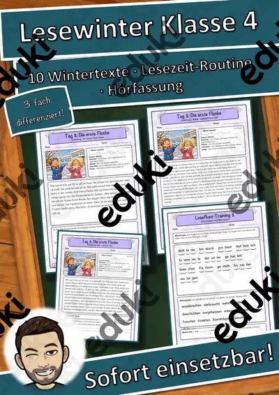
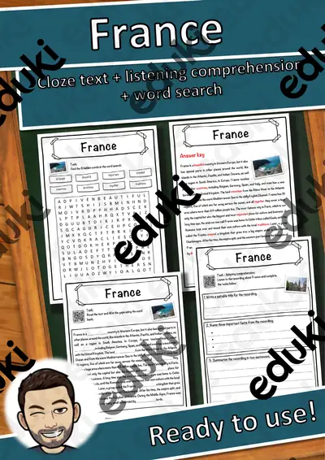
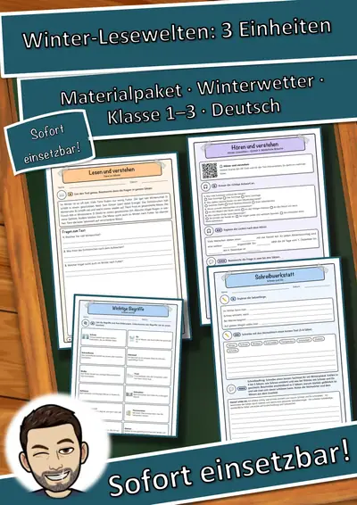
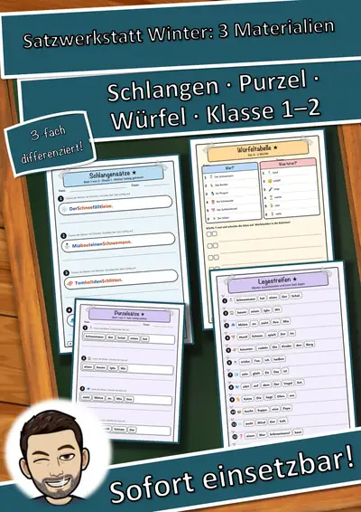

Lesewinter Materialpaket Klasse 2, 3 und 4: 30 Wintertexte in je 3 Stufen – tägliche Lesezeit, Lesefluss-Training, Hörfassung (einmal zahlen)
Lesewinter – drei Lesebände für die tägliche Lesezeit (Klasse 2, 3 und 4)Jeden Tag ein Wintertext: 10 Texte pro Klasse, jeder in drei Stufen (★ ★★ ★★★), mit Lesefluss-Training, Zeitmessung, Tandem-Protokoll, Aufgaben nach AFB I–III, Lese-Tagebuch, Hörfassung per QR-Code und Lösungen. Die Lehrkraftseite enthält einen fertigen Einsatzplan für 20 Tage.
Einmal zahlen, alles dabei: Einzeln kosten die 3 Bände zusammen 8,97 €. Im Paket zahlst du nur 7,99 € (rund 11 % gespart).
Die 3 Bände
Klasse 2 – Kleine Winter-Geschichten
Klasse 3 – Wintergeschichten und Winterwissen
Klasse 4 – Geschichten und Wissen für kalte TageIn jedem Band (40 Seiten)10 Wintertexte × 3 Stufen = 30 Textseiten mit Bild, schweren Wörtern, Zeitfeld und Aufgaben (Ankreuzen, Richtig/Falsch, W-Frage, Nachdenkfrage)Lesefluss-Training: Silbenbögen, Blitzwörter, Lesetreppe, Lesestreifen, Zeitmessung
Tandem-Lese-Protokoll, Lese-Tagebuch, Ich-kann-Check, Urkunde
Hörfassung per QR-Code, Lösungen, Lehrkraftseite mit 20-Tage-Plan
Insgesamt 30 Texte, 90 Textfassungen, 3 Hörfassungen und 120 Seiten. Einsatz: Deutsch, tägliche Lesezeit, Freiarbeit, Wochenplan, Förderunterricht, DaZ, Vertretungsstunde, Winter- und Adventszeit.
Texte, Aufgaben und Layout eigene Erstellung. Texte mit KI-Unterstützung erstellt und geprüft. Illustrationen KI-erzeugt und bearbeitet, keine Fotos, keine realen Personen, keine Marken. Hörfassung per Sprachsynthese.
Viel Freude beim Lesen wünscht dir Snice!
Ähnliche Materialien

Lesewinter Klasse 4: 10 Wintertexte in 3 Stufen – tägliche Lesezeit, Lesefluss-Training, Tandem-Lesen, Hörfassung

Lesewinter Klasse 3: 10 Wintertexte in 3 Stufen – tägliche Lesezeit, Lesefluss-Training, Tandem-Lesen, Hörfassung
Lesewinter Klasse 2: 10 Wintertexte in 3 Stufen – tägliche Lesezeit, Lesefluss-Training, Tandem-Lesen, Hörfassung

Lesespaziergang Tiere im Winter: Pit, der Igel, sucht ein Bett – 8 Stationen in 3 Lesestufen mit Hörfassung (Klasse 1–2, DaZ)

Ziffern-Schreibwerkstatt Materialpaket: Zahlen 0 bis 20 schreiben, zählen, verstehen – 3 Hefte in 3 Stufen (Vorschule, Klasse 1, DaZ)

Winter-Lesewelten Materialpaket: 3 Einheiten – Differenziertes Lesetraining für die Grundschule (Grundschule, Klasse 1–3

Satzwerkstatt Winter Materialpaket: Schlangensätze, Purzelsätze, Würfelsätze – 3 Materialien in 3 Stufen (Klasse 1–2, DaZ)